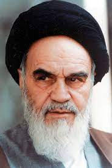

|  | Ruhollah KhomeiniKhomeini was an Iranian religious and political leader, who in 1979 made Iran the world's first Islamic republic of Iran.Ruhollah Khomeini was born in Kohmeyn in central Iran. He became a religious scholar and in the early 1920s rose to become an 'ayatollah', a term for a leading Shia scholar. In 1962, Khomeini was arrested by the shah's security service for his outspoken opposition to the pro-Western regime of the Shah. His arrest elevated him to the status of national hero. In 1964, he was exiled, living in Turkey, Iraq and then France, from where he urged his supporters to overthrow the shah. By the late 1970s, the shah had become deeply unpopular and there were riots, strikes and mass demonstrations across the country. |